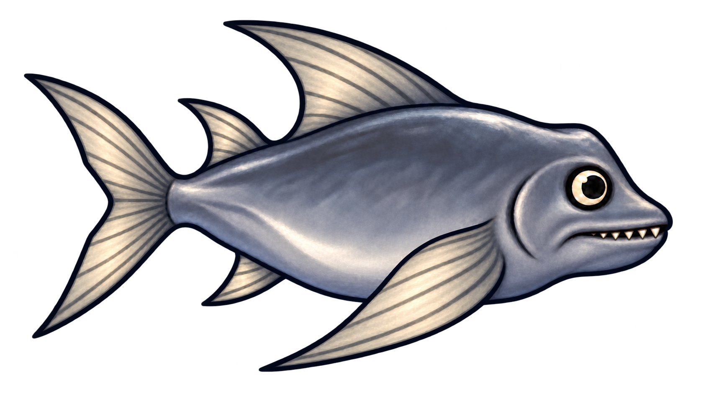
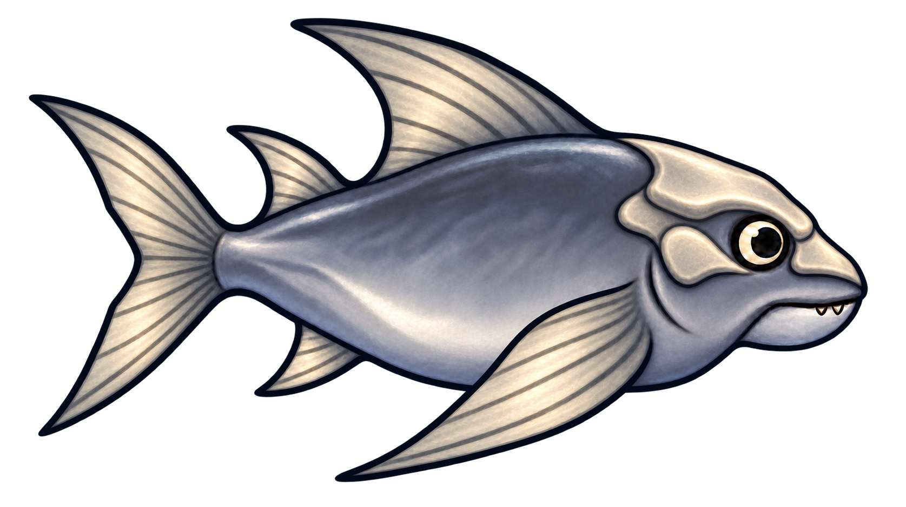
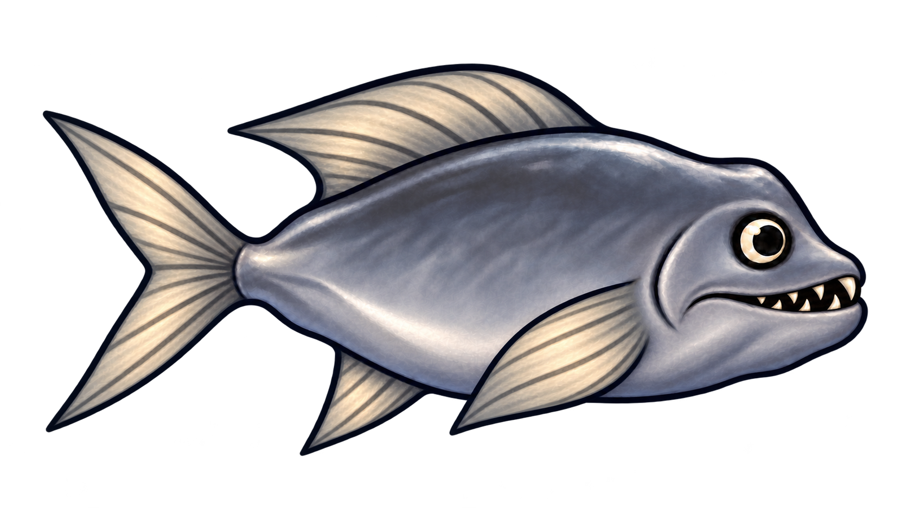
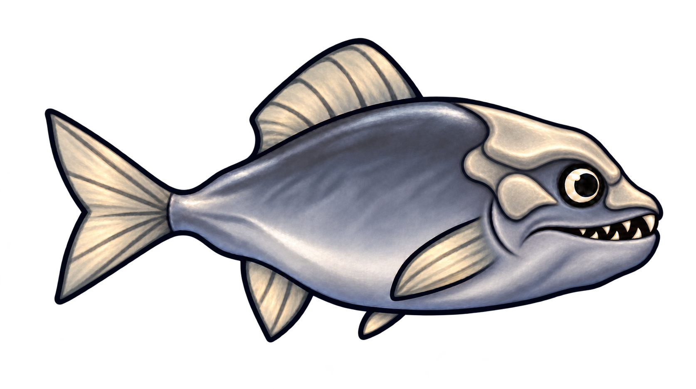
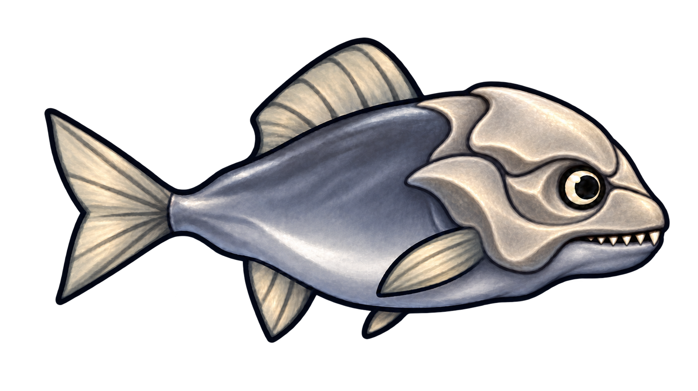
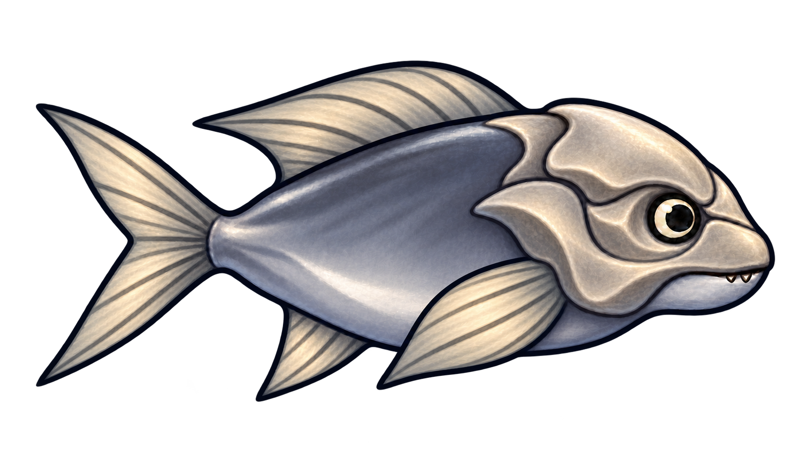

G1F2K0NEU
Doppelte Rückenführung + Raubzähne
Lange sichelförmige Brustflosse, zwei Rückenflossen und hoch gegabelter Schwanz mit der kurzen Zahnreihe der ersten Gebissstufe.
Transparentes PNG herunterladenSechs neue Kombinationen: ein Merkmal auf Stufe 2 und ein anderes auf Stufe 1. Darunter stehen die jeweiligen Einzelreferenzen. Reihenfolge: Gebiss – Flossen – Kopfplatte.

Lange sichelförmige Brustflosse, zwei Rückenflossen und hoch gegabelter Schwanz mit der kurzen Zahnreihe der ersten Gebissstufe.
Transparentes PNG herunterladen
Das vollständige Flossensystem der zweiten Stufe, kombiniert mit niedrigem Stirnschild, Nasenplatte und kleiner Wangenplatte.
Transparentes PNG herunterladen
Tiefer Unterkiefer und ineinandergreifende Fangzähne der zweiten Gebissstufe mit breiteren Steuerflossen und stärker gegabeltem Schwanz.
Transparentes PNG herunterladen
Das kräftige Fanggebiss mit tiefem Unterkiefer, ergänzt um die ersten Stirn-, Nasen- und kleinen Wangenplatten.
Transparentes PNG herunterladen
Geschlossener Stirnschild, geschützte Augenhöhle und kräftige Wangenstütze mit einer sichtbaren Reihe kurzer spitzer Raubzähne.
Transparentes PNG herunterladen
Der Schädelpanzer der zweiten Stufe mit breiter Stirn und Wangenstütze, kombiniert mit kräftigeren Steuerflossen der ersten Stufe.
Transparentes PNG herunterladen